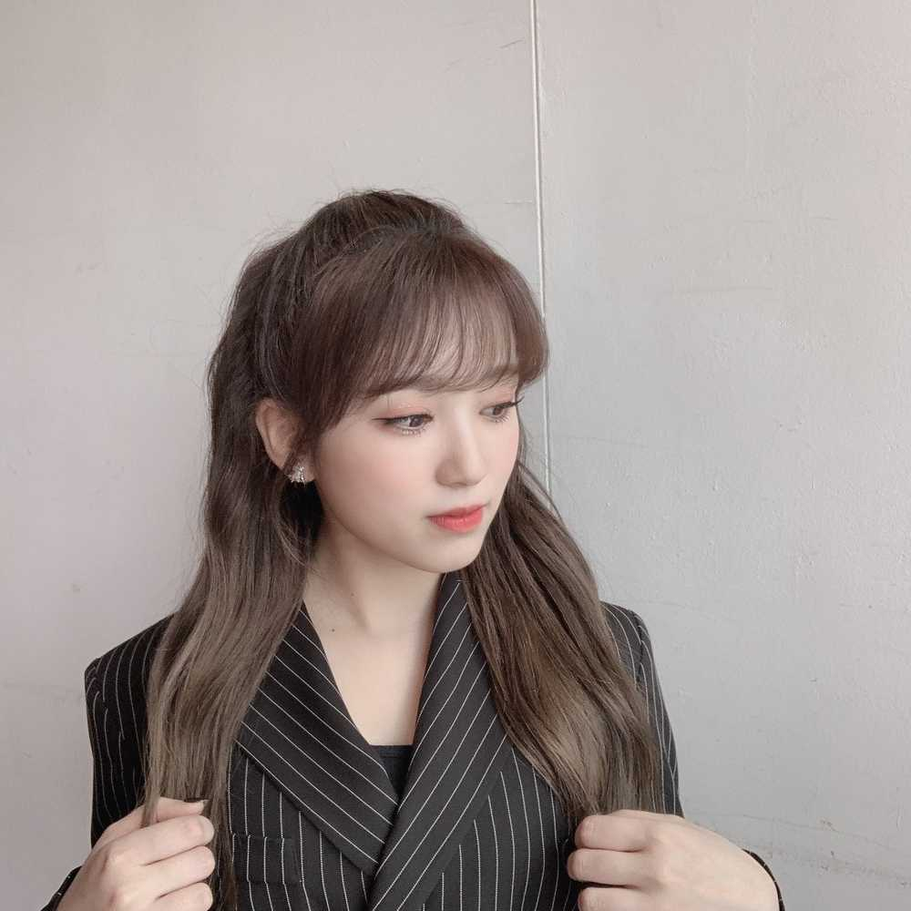

일어났당~
와~ 저녁이다~~ㅋㅋㅋㅋㅋ
배고픈데 딱 매니저언니가 과자 먹고 있어서요...
뺏어 먹고 나왔어요 ㅋㅋㅋㅋㅋㅋㅋ
아 근데 아직도 배고파여 ㅋㅋㅋㅋㅋ
이따 뭐 먹을까~
어제 열심히 했으니까 맛있는거 시켜야징~
오늘 저녁 추천 해주세요ㅎㅎ
おはよー
わーもう夕方…笑笑
お腹空いてたんだけど、ちょうどマネージャーさんがお菓子を食べてたから、ちょっともらったよ😂
だけどまだお腹ぐーぐー言ってるね？笑
あとで何食べようかなー
昨日頑張ったから、なにか美味しいもの頼もうかな☺️
なこの今日の夜ご飯のおすすめはなにかなー？？
